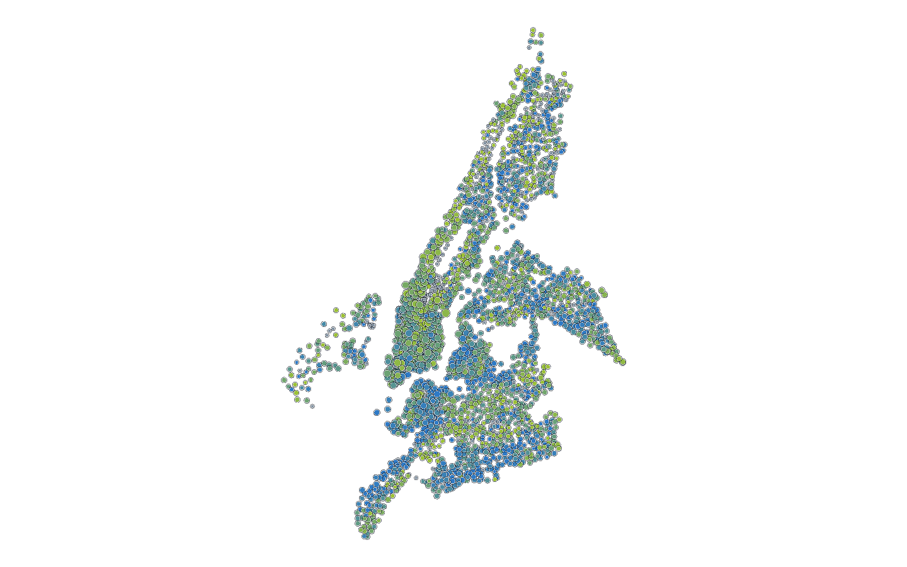

Node.js client for Citi Bike
Every station in New York.
One call away.
Bike, e-bike and dock counts for the whole system, from Node, with nothing else to install.
The npm registry still serves 2.x, which talks to an API Citi Bike shut down. Until 3.x is published, install from GitHub: npm install github:cascadiacollections/citibike
- Stations
- …
- Bikes
- …
- E-bikes
- …
Loading station snapshot…
Why this library
stations() is the product. The rest keeps that one call predictable.
Joined for you
GBFS splits a station's name from its status. One call returns both, matched by id.
Nothing else to install
No runtime dependencies. It uses Node's built-in fetch, and TypeScript types are included.
Errors you can handle
Timeouts, bad status codes, bad JSON and a socket that dies mid-body all reject with an error that has a code.
Cheap to refresh
Feeds are cached for as long as Citi Bike says they stay current, so calling in a loop doesn't hammer the feed.
Nearest station built in
nearest() sorts stations by distance from a point, and can keep only those with a bike, an e-bike or a free dock.
2.x code keeps working
getStations() still calls back with ok, results, numeric ids and nearbyStations, as it did in 2.x.
Three lines
How many stations are renting right now.
example.js
const citibike = new (require('citibike'))();
const stations = await citibike.stations();
console.log(stations.filter((s) => s.isRenting).length + ' stations renting');One station in stations
{
"name": "W 52 St & 11 Ave",
"bikesAvailable": 12,
"ebikesAvailable": 3,
"docksAvailable": 22,
"latitude": 40.76727,
"longitude": -73.99393,
"isRenting": true
}Every field is in the API reference. Coming from 2.x? The callback methods are unchanged.
The library reads the live feeds
The map above is a cached snapshot, refreshed daily, so this page doesn't hammer Citi Bike. Install the client and you read the same public feeds the apps use. No key, no scrape.
About 2,500 stations
Manhattan, Brooklyn, Queens, the Bronx and Jersey City, in one response.
Updated about every minute
The status feed publishes a 60 second ttl. lastReported tells you how fresh a station's reading is.
The GBFS standard
Citi Bike publishes GBFS. Lyft runs the feeds.
The two feeds are station_information and station_status.
Coming from 2.x
Citi Bike shut down appservices.citibikenyc.com, so 3.0.0 reads GBFS instead.
- Your callback code keeps working.
getStations()returns the same envelope, the same numeric stationidandnearbyStations. stationId,availableEbikes,shortName,capacityandlastReportedare new.getBranches()andgetHelmets()always call back withok: false. That data isn't published anymore.- Options you pass now override the defaults, and a failed request calls back instead of hanging.
- New code can use the promise methods:
stations(),station(),nearest()andfeed().
The full list is in the changelog.